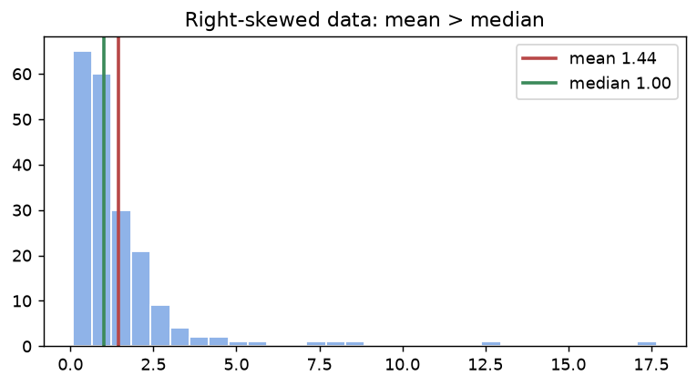

📥 Python 練習ノートブック：ml670_py_practice.ipynb — このページはノートブックの T1の解説です。Jupyter で開いて、同じ名前のセクションを解いてください（自動チェック ✅/❌ 付き）。
①
説明する：何のため？
3文で言えるようにする
モデルを作る前に必ずやるのがデータの要約です。ここで間違えると、あとの前処理がすべてずれます。
| 平均 (mean) | 中央値 (median) | |
|---|---|---|
| 何か | 全部足して件数で割る | 小さい順に並べた真ん中の値 |
| 外れ値 | 引っぱられる | ほとんど動かない |
| 使う場面 | 対称な分布 | 歪んだ分布・外れ値あり |
📝 3文のお手本（自分で書いてから開く）
平均は全部の値の合計を件数で割ったもので、極端に大きい値が1つあるだけで大きく動く。中央値は並べた真ん中なので外れ値に強い。平均が中央値より大きいときは右に歪んでいるので、代表値は中央値を信じる。
②
手で計算する
小さなデータを紙と電卓で
5 つのデータ [2, 3, 3, 4, 50] で、紙と電卓でやってみます。
平均 ＝ (2+3+3+4+50) ÷ 5 ＝ 12.4 ／ 中央値 ＝ 真ん中（3番目）＝ 3。50 が 1 つあるだけで、平均は 12.4 まで跳ね上がります。
x = [2, 3, 3, 4, 50] print(np.mean(x), np.median(x))
12.4 3.0
1.5×IQR ルール：Q1 と Q3 を出し、IQR ＝ Q3 − Q1。Q1 − 1.5×IQR より小さい、または Q3 + 1.5×IQR より大きい値を外れ値とします。ここでは Q1＝3、Q3＝4、IQR＝1 なので上限は 5.5。50 は外れ値です。
q1, q3 = np.percentile(x, [25, 75]) iqr = q3 - q1 print(q1, q3, 'upper =', q3 + 1.5 * iqr)
3.0 4.0 upper = 5.5
③
自分で作る
NumPy で書いて、scikit-learn と一致させる
iqr_outliers(x) と skewness(x) を自作します。歪度は「各値の z スコアの 3 乗の平均」です。
def iqr_outliers(x): x = np.asarray(x, dtype=float) q1, q3 = np.percentile(x, [25, 75]); iqr = q3 - q1 return (x < q1 - 1.5 * iqr) | (x > q3 + 1.5 * iqr) def skewness(x): x = np.asarray(x, dtype=float) return np.mean(((x - x.mean()) / x.std()) ** 3)
pandas と scipy の結果と並べて、一致するかを確かめます（lognormal の右に歪んだ乱数 200 個）。
s = pd.Series(d) q1, q3 = s.quantile(.25), s.quantile(.75) ref = (s < q1 - 1.5 * (q3 - q1)) | (s > q3 + 1.5 * (q3 - q1)) print('外れ値の数 自作:', iqr_outliers(d).sum(), ' pandas:', ref.sum(), ' 一致:', (iqr_outliers(d) == ref.to_numpy()).all()) print('歪度 自作:', round(skewness(d), 4), ' scipy:', round(stats.skew(d), 4), ' pandas .skew():', round(s.skew(), 4)) print('平均', round(d.mean(), 3), ' 中央値', round(np.median(d), 3))
外れ値の数 自作: 11 pandas: 11 一致: True
歪度 自作: 5.0704 scipy: 5.0704 pandas .skew(): 5.1088
平均 1.438 中央値 1.003
pandas の
.skew() だけ少し違う値になりました。scipy の既定は n で割る「標本の歪度」、pandas は小標本の偏りを補正した版だからです。こういう「ずれの理由」を自分で説明できることが、試験でも強みになります。import matplotlib.pyplot as plt fig, ax = plt.subplots(figsize=(7, 3.4)) ax.hist(d, bins=30, color='#8fb3e8', edgecolor='white') ax.axvline(d.mean(), color='#B84848', lw=2, label=f'mean {d.mean():.2f}') ax.axvline(np.median(d), color='#3C8A5A', lw=2, label=f'median {np.median(d):.2f}') ax.legend(); ax.set_title('Right-skewed data: mean > median')

右に歪んだデータ。平均（赤）が中央値（緑）より右にある。
④
白紙で再現する・よくある間違い
次の日に、見ずにもう一度
④ 次の日にやること：ノートブックの「④ 白紙で再現」で、名前の後ろに
_2 が付いた関数を、③を見ずに書き直します。10分以内に ✅ が揃えば合格です。iqr_outliers_2・skewness_2⚠️ よくある間違い
np.percentileに[0.25, 0.75]と渡す（[25, 75]が正しい。np.quantileなら0.25）- 外れ値を見つけたら自動で消す（まず原因を調べる。入力ミスか、本物の極端な値か）
- 歪んだデータの平均を「普通の値」と読む
❓ 確認：平均 12.4・中央値 3 のデータで、「代表的な値」としてふさわしいのは？
中央値（3）。平均は 50 という 1 つの外れ値に引っぱられている。
❓ 確認：歪度がプラスのとき、分布のどちらに裾が長い？
右（大きい方）。平均 > 中央値になりやすい。